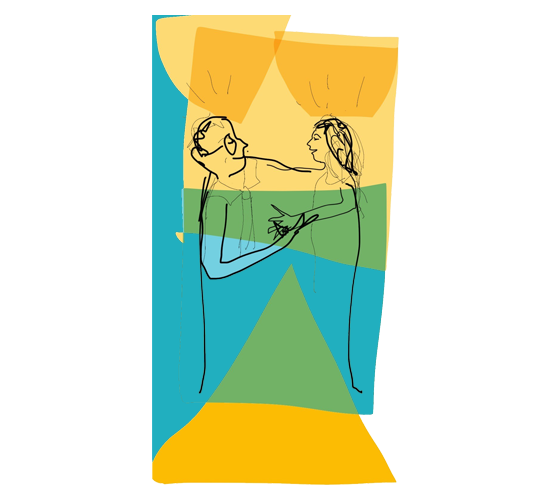

Coaching
Prendre du recul, se positionner, clarifier ses priorités, débloquer ses leviers de progression — pour les dirigeants, les managers et les équipes.
Accompagner les dirigeants, les managers, les contributeurs individuels & les équipes
Un espace confidentiel pour travailler sa posture et avancer sur des objectifs concrets : prise de poste, décisions structurantes, relations aux autres. Le coach n'apporte pas de recette toute faite — il vous aide à trouver vos propres réponses.
Échangeons 30 min sur votre situationUn accélérateur pour
- Réussir une prise de poste ou l'évolution de ses fonctions
- Clarifier ses prises de décisions
- Travailler sa posture de dirigeant ou de manager
- Prendre du recul sur une situation complexe
Un accélérateur pour
- Renforcer la cohésion et la coopération
- Clarifier le cadre, les rôles et les responsabilités
- Trouver sa place dans une réorganisation ou une croissance
- S'appuyer sur l'intelligence collective
Faire grandir les équipes ensemble
Un accompagnement d'équipe pour construire un cadre commun, clarifier les rôles et développer la coopération.
Particulièrement utile lors d'une prise de fonction managériale, d'une réorganisation ou d'une transformation à porter collectivement.
Échangeons 30 min sur votre équipeCoaching flash
Une séance courte et ciblée pour avancer sur une situation précise, sans engagement dans la durée.

Des créneaux dédiés
Le midi (13h–14h) ou en fin de journée (17h–19h), un jour sur deux : des séances de 30 minutes pensées pour les agendas chargés.
Une réservation simple
Choisissez votre date et votre créneau directement dans le formulaire — nous confirmons par email sous 24 h ouvrées.
À l'unité, sans engagement
Séance payante, facturée à l'unité, avec ou sans abonnement. Règlement à la confirmation — paiement en ligne bientôt disponible.
De l'intuition à une vraie stratégie
Les Fromages Bach — fromagerie artisanale familiale en pleine croissance, deux dirigeants associés. Plutôt que d'attendre d'être dépassés par les enjeux humains, ils ont choisi un accompagnement stratégique avec Philippe.
- Structuration de la réflexion et de la méthode de travail
- Compétences et complémentarités de l'équipe clarifiées
- Organisation faite évoluer, l'humain comme levier de développement
« Beaucoup de décisions étaient prises de manière intuitive. L'accompagnement nous a aidés à structurer notre approche, à mettre des mots sur certaines problématiques et à construire une méthode de travail plus solide. »
« Ma manière de communiquer a changé : communication positive, questions ouvertes plutôt que fermées. Les échanges sont plus riches et mon équipe plus impliquée. »
Comment se déroule un coaching ?
Comment démarre-t-on ?
Par un échange de 30 minutes, gratuit et sans engagement. On clarifie votre situation, votre objectif et on valide ensemble le format le plus adapté : individuel, collectif ou flash. Si le courant ne passe pas, vous le dites — la relation de confiance est la condition n°1 d'un coaching utile.
Combien de séances, sur quelle durée ?
Un coaching individuel classique compte 6 à 10 séances de 1 h 30 à 2 h, espacées de 3 à 4 semaines, soit 4 à 8 mois. Un coaching flash est une séance unique de 30 minutes sur une situation précise. Le collectif se cale sur le rythme de l'équipe.
En présentiel ou en visio ?
Les deux. Présentiel dans vos locaux ou près de Lyon ; visio pour les coachings flash et les suivis. Beaucoup de parcours mixent les deux formats.
Qu'est-ce qui reste confidentiel ?
Tout ce qui se dit en séance. Quand l'entreprise finance le coaching d'un collaborateur, un cadrage tripartite fixe les objectifs en amont — mais le contenu des séances n'est jamais restitué à l'employeur.
Que se passe-t-il entre les séances ?
C'est là que le coaching agit : vous expérimentez sur le terrain ce qui a été travaillé en séance. Chaque séance commence par un retour sur ces mises en pratique.
Le coaching est-il finançable ?
Le coaching seul n'est en général pas éligible aux financements OPCO ; adossé à un parcours de formation (ex. CléA Management), une partie peut l'être. On regarde votre cas lors du premier échange — c'est aussi notre métier (ingénierie financière).
Envie d'avancer ? Parlons-en.
Individuel, collectif ou flash : nous cadrons ensemble le format le plus adapté lors d'un premier échange, sans engagement.
Échangeons 30 min sur votre situation